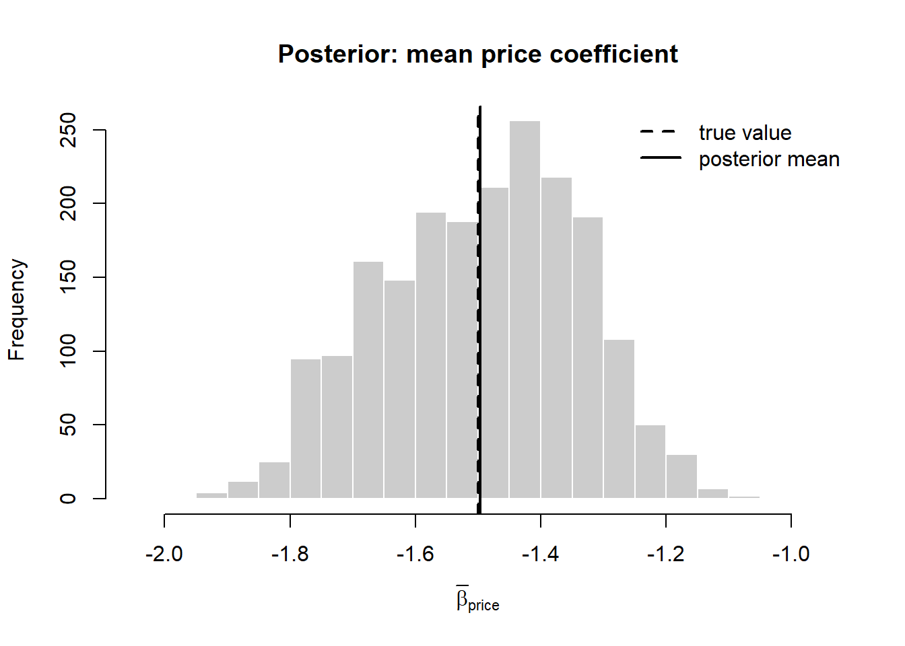

flowchart TD
A["Random-utility model<br/>U = V + e"] --> B{"Distribution of<br/>unobserved e?"}
B -->|"iid Gumbel"| C["Conditional logit<br/>closed form, imposes IIA"]
B -->|"correlated normal"| D["Multinomial probit<br/>full covariance, no IIA"]
B -->|"Gumbel within nests,<br/>correlated across"| E["Nested logit<br/>IIA within nest only"]
B -->|"Gumbel + random beta_n"| F["Mixed (random-coefficients) logit<br/>any substitution pattern"]
F --> G["Heterogeneity as a<br/>mixing distribution"]
G --> H["Hierarchical Bayes<br/>estimation via MCMC"]
36 Discrete Choice and Bayesian Methods
Most marketing decisions reduce to a question about choice: which brand a shopper puts in the cart, which subscription tier a household keeps, which car a buyer drives off the lot. The data that record these decisions are not the continuous quantities of classical regression but discrete selections from a menu—one alternative chosen, the rest forgone. Discrete-choice modeling, grounded in random-utility theory, is the apparatus marketing uses to turn such observations into estimates of preference, willingness to pay, and demand elasticities; the Bayesian hierarchy is the technology that makes those estimates individual-level and usable for targeting.
This chapter is organized as a full-semester doctoral seminar—a reading map that runs from the micro-foundation of individual choice up to the modern Bayesian computation that fits these models at scale. The structure mirrors how the discrete-choice/Bayesian-methods seminar is taught across the leading quantitative marketing programs (Ohio State/Fisher, Chicago/Booth, Wharton, Columbia, Michigan/Ross), and every reading below was DOI-verified against Crossref. The technical core—random-utility theory, the logit and its IIA pathology, the nested/probit/mixed remedies, hierarchical Bayes, and a runnable MCMC worked example—is developed in full within the relevant weeks, so the chapter reads both as a syllabus and as a self-contained treatment. We connect the demand-estimation thread to its industrial-organization counterpart (Chapter 18) and to preference measurement via conjoint analysis, whose hierarchical-Bayes practice is the applied face of everything developed here.
36.1 Semester arc
The seminar is a single intellectual staircase from theory of individual choice up to modern Bayesian computation and scale. It opens with the micro-foundation that organizes everything else—random utility maximization (RUM)—and the workhorse it produces, the multinomial/conditional logit. The first third of the course exhausts what closed-form logit can and cannot do: the independence-of-irrelevant-alternatives (IIA) restriction, the substitution pathologies it implies, and the two classical escapes from it—generalized extreme value (nested logit), which keeps a closed form, and probit, which abandons closed form and forces the course into simulation (the GHK simulator, simulated maximum likelihood). By the time random-coefficients/mixed logit arrives, students see it as the field’s preferred resolution: it relaxes IIA, accommodates unobserved heterogeneity, approximates any RUM, and is estimable either by simulation or by Bayesian MCMC.
The middle third pivots from estimators to the Bayesian paradigm, the distinctive emphasis of the marketing version of this seminar. Students learn the Bayesian logic of inference, conjugacy, and the two engines of modern practice—the Gibbs sampler and the Metropolis–Hastings algorithm—and then the idea that made Bayes the default tool of quantitative marketing: hierarchical Bayes for consumer heterogeneity. The hierarchical normal model that shrinks individual-level parameters toward a population distribution is the conceptual heart of the course, because it simultaneously solves the small-data-per-consumer problem, delivers individual-level posteriors useful for targeting, and unifies choice modeling with conjoint/preference measurement.
The final third applies and extends the machinery: conjoint and preference measurement as the marketing-native application of HB choice models; dynamics and state dependence (Bayesian learning vs. spurious persistence—the field’s central identification debate); aggregate-data demand (BLP-style random-coefficients logit and its Bayesian counterpart); model comparison (Bayes factors, DIC/WAIC, cross-validation); and the computational frontier—Hamiltonian Monte Carlo/Stan and scalable and variational methods for the large, sparse, high-dimensional data that now dominate marketing. The arc ends where the field’s frontier is: probabilistic programming and approximate inference at scale.
A typical assessment structure is weekly reading memos, two or three problem sets that build an estimator from scratch (a hand-coded Gibbs sampler for a hierarchical logit is the signature assignment—see the worked example in Section 36.1.7), a referee report, and a replication-or-extension paper on a real choice dataset (scanner panel, conjoint, or aggregate market shares).
The three foundational books the seminar is built around recur throughout and are cited as “(book)”: Train (2009), Discrete Choice Methods with Simulation, 2nd ed. (Cambridge)—the standard graduate text for RUM, logit/GEV/probit, mixed logit, and simulation- and Bayes-assisted estimation; Rossi, Allenby & McCulloch (2005), Bayesian Statistics and Marketing (Wiley)—the field’s defining text on hierarchical Bayesian methods for marketing and the bayesm package; and Gelman et al. (2013), Bayesian Data Analysis, 3rd ed. (Chapman & Hall/CRC)—the general-statistics reference for Bayesian modeling, MCMC, and predictive evaluation.
36.1.1 Week 1 — Random utility theory & the choice-modeling worldview
Topic. The random-utility-maximization (RUM) foundation; why marketing models choice rather than continuous demand; utility, choice probabilities, and the identification of scale and level.
Subtopics. Deterministic vs. random components; additive RUM; the logit error (Type-I extreme value); welfare and the log-sum; observable vs. latent utility; normalization (only differences and scale are identified).
Methods. Setting up a choice probability from a utility specification; deriving logit from i.i.d. extreme-value errors.
The premise of random-utility theory is that a decision maker assigns a latent utility to each available alternative and chooses the one with the highest utility. The randomness is the analyst’s, not the consumer’s: it represents everything that bears on the decision but is unobserved by the modeler.
Landmark definition: random utility
The utility that decision maker \(n\) obtains from alternative \(j\) is \(U_{nj} = V_{nj} + \varepsilon_{nj}\), where \(V_{nj}\) is a representative (or systematic) component, a function of observed attributes and parameters, and \(\varepsilon_{nj}\) is a random term capturing unobserved determinants of utility. The decision maker chooses alternative \(i\) if and only if \(U_{ni} \ge U_{nj}\) for all \(j\) in the choice set. The choice probability is therefore a statement about the distribution of the differences in the unobserved terms (McFadden 2001).
Formally, let \(n = 1,\dots,N\) index decision makers and let \(\mathcal{C}_n\) be the finite choice set facing decision maker \(n\). The utility of alternative \(j \in \mathcal{C}_n\) is
\[ U_{nj} = V_{nj} + \varepsilon_{nj}, \qquad V_{nj} = \mathbf{x}_{nj}^{\top}\boldsymbol{\beta}, \tag{36.1}\]
where \(\mathbf{x}_{nj}\) collects observed attributes of the alternative (price, features, brand indicators) and possibly interactions with characteristics of the chooser, and \(\boldsymbol{\beta}\) is a vector of taste parameters. The probability that \(n\) chooses \(i\) is the probability that \(i\) yields the highest utility,
\[ P_{ni} = \Pr\!\left( U_{ni} \ge U_{nj}\ \ \forall j \in \mathcal{C}_n \right) = \Pr\!\left( \varepsilon_{nj} - \varepsilon_{ni} \le V_{ni} - V_{nj}\ \ \forall j \neq i \right). \tag{36.2}\]
Three structural facts follow immediately and govern everything downstream. First, only differences in utility matter: adding a constant to every alternative’s utility leaves the choice unchanged, so alternative-invariant variables (a chooser’s income entering identically for all options) drop out and must be interacted with alternative-specific terms to have any effect. Second, the scale of utility is not identified: multiplying all utilities by a positive constant leaves the argmax unchanged, so the variance of \(\varepsilon_{nj}\) must be normalized. Third, the form of the choice probability is determined entirely by the assumed joint distribution of the unobserved terms \(\boldsymbol{\varepsilon}_n = (\varepsilon_{n1},\dots)\). Different assumptions generate the logit, probit, nested, and mixed models that organize the rest of the course.
Key readings.
- McFadden (1974), “Conditional Logit Analysis of Qualitative Choice Behavior,” in Frontiers in Econometrics (Academic Press), pp. 105–142 — book chapter, no Crossref DOI; cite by chapter/volume. The origin of RUM-based conditional logit; the Nobel-cited founding paper. [F]
- Train (2009), Discrete Choice Methods with Simulation, ch. 1–3 (book) — the textbook RUM setup and logit derivation. [F]
- P. K. Chintagunta and Nair (2011) — assigned here (and again in Section 36.1.9) as the marketing-specific overview of why and how marketing uses discrete choice. [F]
Debate. Is RUM a behavioral theory or just a flexible statistical container? What is genuinely identified—and the perennial student trap of interpreting levels or scale?
36.1.2 Week 2 — Logit: the workhorse
Topic. Multinomial/conditional logit; estimation, interpretation, elasticities, and willingness-to-pay.
Subtopics. Likelihood and concavity (global maximum); own/cross elasticities; the log-sum/inclusive value; aggregation; the value and limits of marginal effects.
Methods. Maximum likelihood; Newton-type optimization; delta-method standard errors for WTP and elasticities.
The conditional (or multinomial) logit model arises from a single distributional assumption: the unobserved utility terms are independent across alternatives and each follows a type-I extreme-value (Gumbel) distribution, \(F(\varepsilon_{nj}) = \exp(-e^{-\varepsilon_{nj}})\). The difference of two independent Gumbel variates is logistic, which collapses the multidimensional integral in Equation 36.2 to a closed form:
\[ P_{ni} = \frac{\exp(\mathbf{x}_{ni}^{\top}\boldsymbol{\beta})} {\sum_{j \in \mathcal{C}_n} \exp(\mathbf{x}_{nj}^{\top}\boldsymbol{\beta})}. \tag{36.3}\]
This is the model that brought random-utility estimation into marketing. Calibrated on household scanner data, with \(\mathbf{x}_{nj}\) containing price, promotion indicators, and—critically—a loyalty variable summarizing the household’s past purchases, it predicts brand choice well enough to anchor demand analysis for packaged goods (Peter M. Guadagni and Little 1983b, 1983a; Peter M. Guadagni and Little 2008). The loyalty term is an early, informal device for capturing persistence in tastes that the homogeneous logit cannot otherwise represent, foreshadowing the heterogeneity machinery developed below.
Estimation. With independent observations the logit log-likelihood is globally concave in \(\boldsymbol{\beta}\), so maximum likelihood is straightforward and unique. Writing \(y_{ni} = 1\) if \(n\) chose \(i\) and \(0\) otherwise,
\[ \ell(\boldsymbol{\beta}) = \sum_{n=1}^{N} \sum_{i \in \mathcal{C}_n} y_{ni} \log P_{ni}(\boldsymbol{\beta}), \tag{36.4}\]
which Newton–Raphson or any quasi-Newton routine maximizes reliably. The scale normalization is implicit: the Gumbel variance is fixed at \(\pi^2/6\), so \(\boldsymbol{\beta}\) is identified only up to that scale, and coefficients across models with different error variances are not directly comparable.
Elasticities. The managerial output of a choice model is usually an elasticity. For a price coefficient \(\beta_p\) entering \(V_{nj}\) linearly, the own- and cross-price elasticities of choice probability are
\[ E_{ii} = \beta_p\, p_{ni}\,(1 - P_{ni}), \qquad E_{ij} = -\,\beta_p\, p_{nj}\, P_{nj}. \tag{36.5}\]
The cross-elasticity \(E_{ij}\) is the source of the model’s most consequential defect: it depends on \(j\) only through \(P_{nj}\), so every alternative has the same proportional cross-elasticity with respect to a change in \(j\). This is IIA, examined in Section 36.1.3.
Key readings.
- Train (2009), ch. 3 “Logit” (book) — canonical treatment. [F]
- Peter M. Guadagni and Little (1983a) — the foundational marketing application of logit to scanner-panel brand choice; introduced the loyalty variable and defined empirical choice modeling in marketing for a decade. [F]
Debate. When is logit “good enough”? The gap between statistical fit and the implausible substitution it can imply motivates Weeks 3–5.
36.1.3 Week 3 — IIA, GEV & nested logit
Topic. The independence-of-irrelevant-alternatives property, its substitution-pattern consequences, the red-bus/blue-bus problem, and the closed-form escape via generalized extreme value (GEV)/nested logit.
Subtopics. IIA derivation; proportional substitution; nesting structure and the dissimilarity (nesting) parameter; testing IIA.
Methods. Nested-logit estimation; Hausman-type specification tests.
The logit model’s defining property is that the ratio of any two choice probabilities is independent of the attributes—indeed of the existence—of every other alternative:
\[ \frac{P_{ni}}{P_{nj}} = \frac{\exp(\mathbf{x}_{ni}^{\top}\boldsymbol{\beta})} {\exp(\mathbf{x}_{nj}^{\top}\boldsymbol{\beta})}, \tag{36.6}\]
which contains nothing about any third option \(k\). This independence of irrelevant alternatives (IIA) is a direct consequence of the assumed independence of the Gumbel error terms across alternatives. It is mathematically elegant and behaviorally implausible.
The standard illustration is the red-bus/blue-bus paradox. A commuter chooses between a car and a red bus with equal probability, \(\tfrac{1}{2}\) each, so \(P_{\text{car}}/P_{\text{red}} = 1\). Introduce a blue bus identical to the red bus in every respect but color. Behaviorally the two buses should split the original bus share, leaving car at \(\tfrac{1}{2}\) and each bus at \(\tfrac{1}{4}\). The logit model instead preserves all pairwise ratios, forcing \(P_{\text{car}} = P_{\text{red}} = P_{\text{blue}} = \tfrac{1}{3}\): adding a near-duplicate steals share from the car as readily as from the bus it nearly clones. In a marketing setting the same failure means a logit demand model predicts that a new product cannibalizes every incumbent in proportion to its share, regardless of how close a substitute it actually is—a prediction that misvalues line extensions, new entrants, and assortment changes.
What IIA gets wrong, and when it is safe
IIA is the right model only when alternatives are, conditional on the observed \(\mathbf{x}_{nj}\), equally substitutable for one another. It fails whenever subsets of alternatives share unobserved attributes—body styles of cars, flavor families of snacks, branded versus private-label tiers. The practical diagnostic is a Hausman–McFadden test: estimate the model on the full choice set and on a subset; if IIA holds, dropping alternatives should not change \(\hat{\boldsymbol{\beta}}\), and a significant change rejects IIA. When the test rejects, the logit’s substitution patterns are not merely imprecise—they are structurally wrong, and the remedies of the next sections are required rather than optional.
The IIA property is also why the logit can be estimated on a sampled subset of alternatives when the full choice set is enormous (thousands of SKUs): because ratios of probabilities ignore the rest of the set, a correctly weighted sample of non-chosen alternatives yields consistent estimates—the same property that makes the model behaviorally restrictive makes it tractable at scale.
Key readings.
- Hausman and McFadden (1984) — the standard test for the IIA restriction; defines how students diagnose logit’s central weakness. [F]
- McFadden (1978), “Modelling the Choice of Residential Location,” in Spatial Interaction Theory and Planning Models (North-Holland) — book chapter, no Crossref DOI; the GEV/nested-logit foundation. [F]
- Train (2009), ch. 4 “GEV” (book) — textbook synthesis of nested and cross-nested logit. [F]
Debate. IIA as bug vs. feature; whether nesting structure is theory-driven or data-mined; nested logit as a stopgap before mixed logit/probit.
36.1.4 Week 4 — Probit & simulation: the GHK simulator
Topic. Multinomial probit (MNP), full correlation in errors, the absence of a closed form, and simulation-based estimation (GHK).
Subtopics. Identification in MNP (covariance normalization); the GHK (Geweke–Hajivassiliou–Keane) recursive simulator; simulated maximum likelihood (SML) vs. method of simulated moments (MSM); Bayesian (Gibbs/data-augmentation) MNP as the alternative path.
Methods. GHK simulation; SML/MSM; Gibbs sampling with latent-utility data augmentation.
The multinomial probit model replaces the independent Gumbel errors with a multivariate normal vector, \(\boldsymbol{\varepsilon}_n \sim \mathcal{N}(\mathbf{0}, \boldsymbol{\Sigma})\). The off-diagonal elements of \(\boldsymbol{\Sigma}\) let any pair of alternatives share unobserved utility, so probit imposes no IIA and can represent arbitrary substitution patterns. The price is analytic: the choice probability in Equation 36.2 is now a \((J-1)\)-dimensional integral of the normal density with no closed form,
\[ P_{ni} = \int_{\mathbb{R}^{J-1}} \mathbb{1}\!\left[ U_{ni} \ge U_{nj}\ \forall j \neq i \right] \phi(\boldsymbol{\varepsilon}_n; \boldsymbol{\Sigma})\, d\boldsymbol{\varepsilon}_n . \tag{36.7}\]
For more than three or four alternatives this integral must be approximated by simulation. McFadden’s method of simulated moments made probit estimation feasible by replacing the intractable probabilities with smooth, unbiased frequency-simulator analogues (McFadden 1986). A further subtlety is identification: because only utility differences matter and scale is free, not all elements of \(\boldsymbol{\Sigma}\) are identified—one differences the system and fixes one variance, leaving \(J(J-1)/2 - 1\) free covariance parameters. The Bayesian route sidesteps the simulated-likelihood maximization entirely by augmenting the latent utilities and sampling them as additional unknowns.
Key readings.
- McCulloch and Rossi (1994) — the Bayesian/data-augmentation route to MNP that became the marketing standard; bridges Weeks 4 and 6. [F]
- Geweke, Keane, and Runkle (1994) — the head-to-head of GHK/SML vs. Bayesian MCMC for MNP; defines the simulation toolkit and its trade-offs. [F]
- Train (2009), ch. 5 “Probit” and ch. 9 “Simulation-Assisted Estimation” (book) — textbook GHK and SML/MSM. [F]
Debate. Probit’s flexible correlation vs. its identification fragility and computational cost; classical simulation vs. Bayesian data augmentation as the more reliable estimator.
36.1.5 Week 5 — Mixed / random-coefficients logit
Topic. Mixed (random-parameters) logit: heterogeneous tastes integrated over a mixing distribution; the field’s preferred way to relax IIA and approximate any RUM.
Subtopics. Random vs. fixed coefficients; mixing distributions (normal, lognormal, bounded); panel/repeated-choice mixed logit; the McFadden–Train universal-approximation result; classical (simulated ML) vs. Bayesian (Allenby–Train) estimation.
Methods. Simulated maximum likelihood with Halton draws; hierarchical Bayes/Gibbs–MH estimation of the mixing distribution.
Mixed logit is the model that subsumes the others. Its idea is to let the taste parameters themselves vary across decision makers according to a mixing distribution, \(\boldsymbol{\beta}_n \sim g(\boldsymbol{\beta} \mid \boldsymbol{\theta})\), while retaining an iid Gumbel idiosyncratic term. Conditional on a draw of \(\boldsymbol{\beta}_n\) the model is a plain logit, but the unconditional choice probability integrates over the distribution of tastes,
\[ P_{ni} = \int \frac{\exp(\mathbf{x}_{ni}^{\top}\boldsymbol{\beta})} {\sum_{j \in \mathcal{C}_n}\exp(\mathbf{x}_{nj}^{\top}\boldsymbol{\beta})}\, g(\boldsymbol{\beta} \mid \boldsymbol{\theta})\, d\boldsymbol{\beta}. \tag{36.8}\]
This single device accomplishes three things at once. It breaks IIA: because the mixing correlates the random part of utility across alternatives that share attributes, cross-elasticities are no longer constrained to be equal. It accommodates heterogeneity: \(\boldsymbol{\theta}\) describes how tastes are distributed in the population. And it is fully flexible: any random-utility model—including probit—can be approximated arbitrarily well by a mixed logit with a suitable mixing distribution. The cost, as with probit, is that the integral in Equation 36.8 has no closed form and must be simulated; classical estimation uses simulated maximum likelihood with draws of \(\boldsymbol{\beta}_n\), while the Bayesian approach (Section 36.1.7) targets the same integral through MCMC and is, for the standard normal-mixing case, often the more reliable route (Rossi 2014; Greg M. Allenby, Leone, and Jen 1999).
The family is mapped in Figure 36.1, which organizes every model in the course by the assumed structure of the unobserved utility terms.
Table 36.1 summarizes the trade-offs across the IIA remedies of Weeks 3–5.
| Model | Error structure | IIA? | Closed form? | Main cost |
|---|---|---|---|---|
| Conditional logit | iid Gumbel | Imposed | Yes | Wrong substitution under correlation |
| Nested logit | Gumbel within nests | Within nest only | Yes | Nesting must be assumed a priori |
| Multinomial probit | Multivariate normal | No | No (simulate) | Many covariance params; identification |
| Mixed logit | Gumbel + random \(\boldsymbol{\beta}_n\) | No | No (simulate) | Choice of mixing distribution |
Key readings.
- McFadden and Train (2000) — proves mixed logit can approximate any random-utility model arbitrarily well; the theoretical license for the whole approach. [F]
- Revelt and Train (1998) — the canonical panel/repeated-choice mixed-logit application; template for individual-level taste recovery. [F]
- Train and Sonnier (2005) — bounded/correlated mixing distributions so estimated partworths stay economically sensible; a standard refinement for applied mixed logit and conjoint. [F]
- Train (2009), ch. 6 “Mixed Logit” and ch. 12 (Bayesian procedures) (book). [F]
Debate. Choice of mixing distribution (normal vs. lognormal vs. nonparametric); whether random coefficients capture taste heterogeneity or absorb misspecification; simulated-ML vs. Bayesian estimation.
36.1.6 Week 6 — Bayesian foundations & MCMC: Gibbs and Metropolis–Hastings
Topic. The Bayesian paradigm and the two computational engines that made it practical for choice models.
Subtopics. Prior, likelihood, posterior; conjugacy; data augmentation (latent utilities) for choice models; the Gibbs sampler; Metropolis–Hastings; convergence diagnostics and mixing.
Methods. Hand-coding a Gibbs sampler; MH proposals and acceptance; assessing convergence.
MCMC constructs a Markov chain whose stationary distribution is exactly the posterior; running the chain long enough and discarding an initial burn-in yields dependent draws from that posterior, from which any quantity of interest is computed as a sample average. Two building blocks suffice for choice models. Gibbs sampling cycles through the parameter blocks, drawing each from its full conditional distribution—exploiting conjugacy so that conditionals reduce to textbook draws. The Metropolis–Hastings step handles blocks that are not conjugate: a candidate is proposed and accepted with a probability that depends only on the likelihood and prior, never on the intractable normalizing constant. For probit and multinomial models, data augmentation restores conjugacy by sampling the latent utilities as additional unknowns. The full mechanics—including the acceptance ratio and one sampler sweep—are developed concretely in Section 36.1.7.
Key readings.
- Gelfand and Smith (1990) — the paper that launched modern applied MCMC by popularizing the Gibbs sampler for marginal-density computation. [F]
- Casella and George (1992) — the pedagogically standard, intuition-first introduction to Gibbs sampling. [F]
- Chib and Greenberg (1995) — the companion intuition-first treatment of Metropolis–Hastings; with Casella–George it is the canonical “learn MCMC” pair. [F]
- Gelman et al. (2013), Bayesian Data Analysis (book) — the reference text for the underlying theory. [F]
Debate. Subjective vs. objective priors; how much prior matters in hierarchical models; diagnosing convergence honestly (autocorrelation, multiple chains).
36.1.7 Week 7 — Hierarchical Bayes for heterogeneity (the heart of the course)
Topic. Hierarchical (multilevel) Bayesian models of consumer heterogeneity; shrinkage; individual-level posteriors for targeting.
Subtopics. The hierarchical normal prior over individual coefficients; random-effects logit/probit; borrowing strength; the value of individual-level inference; scale-usage and related nuisance heterogeneity.
Methods. Two-stage Gibbs for hierarchical logit/probit; posterior summaries at the individual level.
The mixing distribution \(g(\boldsymbol{\beta}\mid\boldsymbol{\theta})\) of Equation 36.8 is where heterogeneity lives, and treating it carefully is what separates a model that merely fits aggregate shares from one that supports targeting, segmentation, and individual-level prediction. The Bayesian hierarchy is the natural language for this. The key obstacle is that each consumer supplies only a handful of choices, far too few to estimate an individual taste vector \(\boldsymbol{\beta}_n\) on its own. The hierarchical model solves this by borrowing strength: it assumes individuals are drawn from a common population distribution and lets each person’s estimate shrink toward the population mean by an amount governed by how informative that person’s own data are. A three-level specification makes this concrete:
\[ \begin{aligned} \text{(likelihood)}\quad & y_{ni} \mid \boldsymbol{\beta}_n \ \sim\ \text{Logit}\big(\mathbf{x}_{ni}^{\top}\boldsymbol{\beta}_n\big), \\[2pt] \text{(heterogeneity / prior)}\quad & \boldsymbol{\beta}_n \ \sim\ \mathcal{N}\big(\bar{\boldsymbol{\beta}},\, \mathbf{V}_\beta\big), \\[2pt] \text{(hyperprior)}\quad & \bar{\boldsymbol{\beta}} \ \sim\ \mathcal{N}(\boldsymbol{\mu}_0,\, \mathbf{A}^{-1}), \qquad \mathbf{V}_\beta \ \sim\ \text{Inverse-Wishart}(\nu_0, \mathbf{V}_0). \end{aligned} \tag{36.9}\]
The middle line is exactly the mixing distribution of mixed logit, now read as a prior on each individual’s tastes whose parameters \((\bar{\boldsymbol{\beta}}, \mathbf{V}_\beta)\) are themselves estimated. An individual with many observations is driven by the first line (their own data); an individual with few is pulled toward \(\bar{\boldsymbol{\beta}}\) by the second. This shrinkage is not a regularization hack but the optimal pooling of individual and population information under the model, and it is the reason hierarchical Bayes recovers usable individual-level estimates from sparse data—the property that made it the standard estimator for choice-based conjoint and household-level demand (Rossi 2014; Kamakura et al. 2005; Greg M. Allenby and Rossi 1998).
Why Bayesian, not just penalized likelihood?
The hierarchical structure could in principle be fit by maximizing a penalized likelihood (empirical Bayes), and for the population parameters the two agree asymptotically. The Bayesian apparatus earns its keep on the individual-level posteriors: it delivers a full posterior distribution for each \(\boldsymbol{\beta}_n\)—hence honest uncertainty for targeting decisions—and it sidesteps the simulated-likelihood maximization that is numerically fragile for high-dimensional mixing distributions. The cost is the construction and tuning of an MCMC sampler.
36.1.7.1 The MCMC engine
MCMC makes the hierarchy in Equation 36.9 estimable. Gibbs sampling cycles through the parameter blocks. Two of the three conditionals are conjugate and drawn directly: given the individual \(\boldsymbol{\beta}_n\), the population mean \(\bar{\boldsymbol{\beta}}\) has a normal full conditional and the covariance \(\mathbf{V}_\beta\) an inverse-Wishart full conditional—which is precisely why the normal–inverse-Wishart hyperprior is chosen. The Metropolis–Hastings step handles the non-conjugate individual logit block. A candidate \(\boldsymbol{\beta}_n^{\star}\) is proposed (commonly by a random walk) and accepted with probability
\[ \alpha = \min\!\left\{ 1,\ \frac{p(y_n \mid \boldsymbol{\beta}_n^{\star})\, \phi(\boldsymbol{\beta}_n^{\star} \mid \bar{\boldsymbol{\beta}}, \mathbf{V}_\beta)} {p(y_n \mid \boldsymbol{\beta}_n)\, \phi(\boldsymbol{\beta}_n \mid \bar{\boldsymbol{\beta}}, \mathbf{V}_\beta)} \right\}. \tag{36.10}\]
The acceptance ratio depends only on the likelihood and prior, never on the intractable normalizing constant. For probit and multinomial models, data augmentation restores conjugacy by sampling the latent utilities \(U_{nj}\) as additional unknowns (Chib, Seetharaman, and Strijnev 2002; McCulloch and Rossi 1994). Figure 36.2 sketches one sweep.
flowchart LR
S["Current draw:<br/>beta_n, beta_bar, V_beta"] --> A["Draw beta_n | rest<br/>(Metropolis-Hastings, eq. 9)"]
A --> B["Draw beta_bar | beta_n, V_beta<br/>(Normal, conjugate)"]
B --> C["Draw V_beta | beta_n, beta_bar<br/>(Inverse-Wishart, conjugate)"]
C --> D{"Converged?<br/>(R-hat, trace plots)"}
D -->|"no"| S
D -->|"yes"| E["Retain post-burn-in draws<br/>= posterior sample"]
Convergence is not automatic and must be checked. Standard diagnostics are the trace plot, the potential-scale-reduction factor \(\hat R\) across multiple dispersed chains (values near \(1.0\) indicate convergence), and the effective sample size, which discounts the nominal draw count by autocorrelation (P. Chintagunta et al. 2006).
36.1.7.2 Worked example: hierarchical Bayes for brand choice
The following self-contained example simulates a choice-based experiment with heterogeneous consumers, fits a homogeneous logit and a hierarchical-Bayes mixed logit, and shows that the hierarchical model recovers the individual-level taste distribution the homogeneous model cannot see.
Code
set.seed(50)
# ---- Simulate a choice-based conjoint / brand-choice experiment ----
n_consumers <- 200 # decision makers
n_tasks <- 12 # choice tasks per consumer
n_alts <- 3 # alternatives per task (brands A, B, C)
n_attr <- 4 # intercepts for B and C, price, a feature dummy
# Population (hyper) parameters: mean tastes and heterogeneity covariance
beta_bar <- c(brandB = 0.8, brandC = 0.4, price = -1.5, feature = 0.7)
V_beta <- diag(c(0.5, 0.5, 0.4, 0.3)) # taste heterogeneity
# Draw individual-level tastes from the population distribution
library(MASS)
beta_i <- mvrnorm(n_consumers, mu = beta_bar, Sigma = V_beta)
# Build design matrices and simulate choices under the logit model
sim_one <- function(b) {
Y <- integer(n_tasks); X_list <- vector("list", n_tasks)
for (t in seq_len(n_tasks)) {
price <- runif(n_alts, 0, 1) # standardized price
feature <- rbinom(n_alts, 1, 0.5)
X <- cbind(brandB = c(0, 1, 0), brandC = c(0, 0, 1),
price = price, feature = feature)
v <- as.numeric(X %*% b)
p <- exp(v) / sum(exp(v))
Y[t] <- sample.int(n_alts, 1, prob = p) # realized choice
X_list[[t]] <- X
}
list(Y = Y, X = X_list)
}
data <- lapply(seq_len(n_consumers), function(i) sim_one(beta_i[i, ]))
cat("Simulated", n_consumers, "consumers x", n_tasks, "tasks.\n")
#> Simulated 200 consumers x 12 tasks.A pooled logit that ignores heterogeneity recovers the population mean tastes reasonably but, by construction, says nothing about their spread.
Code
# Negative log-likelihood for a homogeneous conditional logit
nll_logit <- function(b, data) {
ll <- 0
for (d in data) for (t in seq_along(d$Y)) {
v <- as.numeric(d$X[[t]] %*% b)
ll <- ll + (v[d$Y[t]] - log(sum(exp(v))))
}
-ll
}
fit_pooled <- optim(rep(0, n_attr), nll_logit, data = data,
method = "BFGS")
pooled <- setNames(round(fit_pooled$par, 3), names(beta_bar))
rbind(true_mean = beta_bar, pooled_logit = pooled)
#> brandB brandC price feature
#> true_mean 0.800 0.400 -1.500 0.700
#> pooled_logit 0.738 0.453 -1.244 0.594Now the hierarchical-Bayes mixed logit. The sampler implements exactly the sweep of Figure 36.2: a random-walk Metropolis step for each consumer’s \(\boldsymbol{\beta}_n\) (the non-conjugate block, 2), a conjugate normal draw for the population mean \(\bar{\boldsymbol{\beta}}\), and a conjugate inverse-Wishart draw for the heterogeneity covariance \(\mathbf{V}_\beta\).
Code
# Log individual likelihood + log prior, up to a constant
log_post_i <- function(b, d, mu, Sig_inv) {
ll <- 0
for (t in seq_along(d$Y)) {
v <- as.numeric(d$X[[t]] %*% b)
ll <- ll + (v[d$Y[t]] - log(sum(exp(v))))
}
ll - 0.5 * as.numeric(t(b - mu) %*% Sig_inv %*% (b - mu))
}
R <- 4000; burn <- 2000; step <- 0.25 # MCMC controls
p <- n_attr
beta_draws <- array(0, dim = c(n_consumers, p),
dimnames = list(NULL, names(beta_bar))) # current individual betas
mu_draw <- rep(0, p) # current population mean
Sig_draw <- diag(p) # current covariance
nu0 <- p + 3; V0 <- diag(p) * nu0 # inverse-Wishart hyperprior
keep_mu <- matrix(0, R - burn, p)
keep_V <- array(0, dim = c(R - burn, p, p))
acc <- 0
riwish <- function(nu, S) { # inverse-Wishart draw
L <- chol(solve(S)); k <- nrow(S)
Z <- matrix(rnorm(nu * k), nu, k) %*% t(L)
solve(crossprod(Z))
}
for (r in seq_len(R)) {
Sig_inv <- solve(Sig_draw)
# (1) Metropolis-Hastings update of each consumer's beta
for (i in seq_len(n_consumers)) {
cur <- beta_draws[i, ]
prop <- cur + rnorm(p, 0, step)
la <- log_post_i(prop, data[[i]], mu_draw, Sig_inv) -
log_post_i(cur, data[[i]], mu_draw, Sig_inv)
if (log(runif(1)) < la) { beta_draws[i, ] <- prop; acc <- acc + 1 }
}
# (2) Conjugate normal draw for population mean
bbar <- colMeans(beta_draws)
Vn <- solve(n_consumers * Sig_inv + diag(p) * 1e-4)
mu_draw <- as.numeric(Vn %*% (n_consumers * Sig_inv %*% bbar) +
t(chol(Vn)) %*% rnorm(p))
# (3) Conjugate inverse-Wishart draw for covariance
S <- V0 + crossprod(sweep(beta_draws, 2, mu_draw))
Sig_draw <- riwish(nu0 + n_consumers, S)
if (r > burn) { keep_mu[r - burn, ] <- mu_draw; keep_V[r - burn, , ] <- Sig_draw }
}
cat("MH acceptance rate:", round(acc / (R * n_consumers), 2), "\n")
#> MH acceptance rate: 0.66
hb_mean <- setNames(round(colMeans(keep_mu), 3), names(beta_bar))
rbind(true_mean = beta_bar, hb_posterior_mean = hb_mean)
#> brandB brandC price feature
#> true_mean 0.800 0.400 -1.500 0.700
#> hb_posterior_mean 0.748 0.398 -1.497 0.721The hierarchical posterior recovers not only the population means but the heterogeneity the pooled model discards—the diagonal of \(\mathbf{V}_\beta\), which quantifies how widely price sensitivity and brand preference vary.
Code
hist(keep_mu[, 3], breaks = 30, col = "grey80", border = "white",
main = "Posterior: mean price coefficient",
xlab = expression(bar(beta)[price]))
abline(v = beta_bar["price"], lwd = 2, lty = 2)
abline(v = mean(keep_mu[, 3]), lwd = 2)
legend("topright", c("true value", "posterior mean"),
lty = c(2, 1), lwd = 2, bty = "n")
With individual posteriors in hand the analyst can compute a distribution of willingness to pay for the feature—the ratio of the feature coefficient to the (negated) price coefficient for each consumer—rather than a single number, and can target the consumers whose posteriors place them above a profitability threshold.
Key readings.
- Greg M. Allenby and Rossi (1998) — the manifesto for hierarchical-Bayes heterogeneity in marketing; argues for individual-level inference over representative-agent models. [F]
- Rossi, McCulloch, and Allenby (1996) — the template HB application: individual-level posteriors (shrinkage toward the population) raise the value of household data for targeting. [F]
- Greg M. Allenby and Lenk (1995) — an early, influential hierarchical choice model showing how heterogeneity reshapes substantive conclusions about loyalty and price sensitivity. [F]
- Rossi, Gilula, and Allenby (2001) — shows how hierarchical Bayes cleanly removes a pervasive nuisance (respondents using rating scales differently); a model template beyond choice. [F]
Debate. Continuous (HB) vs. discrete (latent-class/finite-mixture) heterogeneity; how much structure to put in the upper-level prior; whether individual posteriors are “real” or regularization artifacts.
36.1.8 Week 8 — Conjoint & preference measurement
Topic. Choice-based conjoint and preference measurement as the marketing-native application of HB choice models.
Subtopics. Partworth estimation via HB; reduced designs and borrowing strength; constrained/sign-restricted priors; heterogeneity-distribution choice; adaptive and efficient design.
Methods. HB conjoint estimation; experimental design for choice; holdout prediction.
The hierarchical estimator of Section 36.1.7 is the dominant tool for recovering individual partworths from conjoint designs in which each respondent answers far fewer profiles than there are parameters. The normal-mixing assumption is a modeling choice, not a fact: it cannot represent multimodal tastes (genuine segments), and a normally distributed price coefficient places positive probability on consumers who prefer higher prices. Remedies include log-normal or sign-constrained coefficients, finite mixtures of normals for true segments, and—where the analyst doubts any parametric form—nonparametric mixing. Identification is delicate, so model comparison and holdout validation (1) are essential rather than ornamental (P. Chintagunta et al. 2006).
Key readings.
- Lenk et al. (1996) — foundational HB conjoint: recovers heterogeneous partworths even when each respondent answers far fewer profiles than parameters. [F]
- Greg M. Allenby, Arora, and Ginter (1995) — shows how economically motivated (e.g., sign-constrained) priors improve partworth plausibility and prediction. [F]
- Andrews, Ansari, and Currim (2002) — the standard HB-vs-finite-mixture comparison; ties Week 7’s heterogeneity debate to a concrete conjoint application. [F]
- Train and Sonnier (2005) (see Section 36.1.5) — bounded/correlated partworth distributions for conjoint. [F]
Debate. Continuous vs. discrete heterogeneity in conjoint; constrained vs. unconstrained partworths; whether better designs or better priors matter more for small per-respondent samples.
36.1.9 Week 9 — Aggregate-data demand & integrating out heterogeneity
Topic. Random-coefficients logit demand from aggregate market shares (BLP); the Bayesian counterpart; the mechanics of integrating out heterogeneity and endogeneity.
Subtopics. The BLP contraction and GMM; the inversion from shares to mean utilities; instruments and price endogeneity; the Bayesian (Jiang–Manchanda–Rossi) approach; numerical reliability (MPEC).
Methods. GMM with the BLP contraction; MSM; Bayesian estimation from aggregate data; MPEC reformulation.
When individual choices are unobserved and only market shares are recorded, the random-coefficients demand system inverts shares to recover mean utilities and estimates the mixing distribution from share variation across markets (S. Berry, Levinsohn, and Pakes 1995b, 1995a)—the bridge between the consumer-level models of this chapter and industry-level demand analysis (Chapter 18), with active work on practical edge cases such as zero-share products (Dubé, Hortaçsu, and Joo 2021). The Bayesian counterpart integrates out heterogeneity from aggregate shares via MCMC.
Key readings.
- S. T. Berry (1994) — introduces the share-inversion that lets discrete-choice demand be estimated from aggregate data with endogenous prices. [F]
- S. Berry, Levinsohn, and Pakes (1995a) — the canonical BLP random-coefficients aggregate-demand model; the reference point for all market-share choice estimation. [F]
- Jiang, Manchanda, and Rossi (2009) — the Bayesian counterpart to BLP; shows how MCMC integrates out heterogeneity from aggregate shares. [F → R]
- P. K. Chintagunta and Nair (2011) — the marketing-specific synthesis of the whole discrete-choice demand toolkit; the natural anchor/overview citation. [F]
- Petrin (2002) — shows how BLP-style demand plus micro-moments yields welfare/counterfactual answers; a model application. [F]
Debate. GMM/BLP vs. Bayesian estimation of the same model; instrument validity and weak instruments; numerical fragility of the nested contraction (and MPEC as the fix, Dubé–Fox–Su, 10.3982/ecta8585).
36.1.10 Week 10 — Dynamics & state dependence
Topic. Dynamic choice: Bayesian learning, structural state dependence, and the central identification problem of distinguishing genuine persistence from unobserved heterogeneity.
Subtopics. Forward-looking vs. myopic consumers; Bayesian learning about brand attributes; habit/inertia/loyalty; the heterogeneity-vs-state-dependence confound; the initial-conditions problem.
Methods. Dynamic structural estimation; hierarchical Bayes with autocorrelated/lagged terms; careful identification design.
Key readings.
- Erdem and Keane (1996) — the founding consumer-learning choice model: forward-looking Bayesian consumers learning brand quality from experience and advertising. [F → R]
- Keane (1997) — the methodological statement of the heterogeneity-vs-state-dependence identification problem; required reading for the debate. [F]
- Dubé, Hitsch & Rossi (2010), “State Dependence and Alternative Explanations for Consumer Inertia,” RAND J. Econ. 41(3):417–445, 10.1111/j.1756-2171.2010.00106.x — the modern resolution isolating genuine state dependence from persistent heterogeneity. [R]
Debate. Structural state dependence vs. spurious persistence from heterogeneity; forward-looking vs. reduced-form dynamics; how much the initial-conditions assumption drives results.
36.1.11 Week 11 — Model comparison: Bayes factors, DIC, WAIC, cross-validation
Topic. Comparing and checking Bayesian choice models.
Subtopics. Marginal likelihood and Bayes factors; sensitivity to priors (Lindley/Bartlett paradox); DIC and the effective number of parameters; WAIC; leave-one-out cross-validation (PSIS-LOO); posterior predictive checks.
Methods. Computing marginal likelihoods (Chib’s method); DIC/WAIC; LOO; posterior predictive checking.
Key readings.
- Kass and Raftery (1995) — the definitive treatment of Bayes factors for model comparison; sets up the marginal-likelihood approach and its prior sensitivity. [F]
- Spiegelhalter et al. (2002) — introduces DIC and the effective number of parameters; the most-used hierarchical-model comparison criterion in applied marketing. [F]
- Gelman, Hwang, and Vehtari (2014) — unifies AIC/DIC/WAIC and predictive evaluation; the modern conceptual map for choosing a criterion. [F → R]
-
Vehtari, Gelman, and Gabry (2017) — the current practical standard (PSIS-LOO + WAIC) with the
loopackage; what students should actually run today. [R]
Debate. Bayes factors (and prior sensitivity) vs. predictive criteria (WAIC/LOO); DIC’s known pathologies; in-sample fit vs. holdout prediction as the right target for marketing models.
36.1.12 Week 12 — Hamiltonian Monte Carlo & Stan
Topic. Gradient-based MCMC and probabilistic programming as the modern default engine.
Subtopics. Why random-walk MH/Gibbs mix poorly in high dimensions; Hamiltonian dynamics; the No-U-Turn Sampler (NUTS); non-centered parameterization for hierarchical models; the Stan ecosystem.
Methods. Coding a hierarchical choice model in Stan; HMC/NUTS diagnostics (divergences, energy, R-hat, effective sample size); reparameterization.
Key readings.
- Carpenter et al. (2017) — the reference for Stan; the tool most students will use to fit hierarchical choice models going forward. [R]
- Hoffman & Gelman (2014), “The No-U-Turn Sampler,” Journal of Machine Learning Research 15:1593–1623 — JMLR, no Crossref DOI; cite by volume/pages. The NUTS algorithm underlying Stan’s sampler. [R]
- Gelman et al. (2013), Bayesian Data Analysis, HMC chapter (book) — textbook treatment. [F]
Debate. HMC/NUTS vs. problem-specific Gibbs samplers (speed vs. generality); when divergences signal a real modeling problem vs. a tuning problem; the centered/non-centered parameterization trade-off in hierarchical models.
36.1.13 Week 13 — Scalable & variational methods
Topic. Approximate Bayesian inference for large, high-dimensional, sparse marketing data.
Subtopics. Mean-field and structured variational inference; the ELBO; automatic differentiation variational inference (ADVI); stochastic/streaming variants; accuracy-vs-speed trade-offs; where VI fails for choice models.
Methods. Variational inference; ADVI in Stan/PyMC; diagnostics for approximate posteriors.
Key readings.
- Blei, Kucukelbir, and McAuliffe (2017) — the standard statistician-facing introduction to variational inference; the conceptual anchor for the scalable-methods week. [R]
- Ansari and Mela (2003) — a marketing exemplar of high-dimensional Bayesian modeling for personalization at scale; motivates why scalable inference matters. [F]
- Yang and Allenby (2003) — a Bayesian spatial-autoregressive choice model; shows how richer dependence structures (and the computation they demand) extend the hierarchical-choice toolkit. [F]
- Carpenter et al. (2017) (see Section 36.1.12) — Stan also implements ADVI, the bridge from HMC to VI. [R]
Debate. Variational approximation bias vs. MCMC accuracy; whether VI’s posterior uncertainties can be trusted for inference (vs. only point prediction); the encroachment of ML/deep methods on Bayesian choice modeling.
36.1.14 Week 14 — Synthesis, frontier & research design
Topic. Pulling the threads together; designing a choice-modeling research paper; the open frontier.
Subtopics. Matching estimator to question (closed-form vs. simulation vs. MCMC vs. VI); identification storytelling; replication and reproducibility (bayesm, Stan, loo); current frontiers—ML/Bayesian hybrids, text/image as choice covariates, privacy-constrained estimation, scalable personalization.
Methods. Referee report; replication-or-extension project presentation.
The recurring lesson across the semester is that the hard part of choice modeling is rarely the optimizer or the sampler; it is matching the model’s substitution structure and heterogeneity to the market and the decision at hand. Revealed- preference data suffer endogeneity (instruments and control functions, with their own pitfalls); stated-preference conjoint avoids price endogeneity by design at the cost of hypothetical bias; aggregate data require the BLP machinery of Section 36.1.9. A choice model’s in-sample fit is a weak guide—holdout prediction, recovery of known substitution patterns, and evidence that an IIA relaxation changes substantive conclusions are the operative tests (P. Chintagunta et al. 2006; Dubé, Hortaçsu, and Joo 2021).
Key readings. Student-selected frontier papers plus the field syntheses already assigned: Greg M. Allenby and Rossi (1998), P. K. Chintagunta and Nair (2011), and the Bayesian-marketing review Rossi & Allenby (2003), Marketing Science 22(3):304–328, 10.1287/mksc.22.3.304.17739. [R]
Debate. The whole-course tension: structural/behavioral interpretability vs. predictive flexibility; Bayesian vs. classical estimation of identical models; how much marketing’s choice-modeling tradition will be absorbed into machine learning.
36.2 Foundational vs. frontier at a glance
| Week | Topic | Status |
|---|---|---|
| 1 | RUM theory | Foundational |
| 2 | Logit | Foundational |
| 3 | IIA / GEV / nested | Foundational |
| 4 | Probit & GHK simulation | Foundational |
| 5 | Mixed / random-coefficients logit | Foundational (bridges to frontier) |
| 6 | Bayesian foundations & MCMC | Foundational |
| 7 | Hierarchical Bayes for heterogeneity | Foundational (course core) |
| 8 | Conjoint / preference measurement | Foundational application; design is frontier |
| 9 | Aggregate demand / integrating out heterogeneity | Foundational → frontier |
| 10 | Dynamics & state dependence | Foundational → frontier |
| 11 | Model comparison (Bayes factors / DIC / WAIC / LOO) | Foundational (LOO/WAIC are the modern frontier) |
| 12 | HMC / Stan | Frontier, now standard |
| 13 | Scalable & variational methods | Frontier |
| 14 | Synthesis & research frontier | Frontier / craft |
Weeks 1–11 are the durable canon a chapter must cover; Weeks 12–14 are where the chapter dates fastest and needs the most active maintenance.
36.3 How this chapter expands
- Keep the spine fixed, refresh the engine. Weeks 1–11 (RUM → logit/GEV/probit → mixed logit → Bayesian/MCMC → HB → conjoint → aggregate demand → dynamics → model comparison) are stable for a generation. The computation weeks (12–13) turn over fastest; budget for revising them every edition as Stan, PyMC, JAX-based samplers, and normalizing-flow/amortized VI mature.
-
Promote model comparison from afterthought to spine. WAIC/PSIS-LOO
- have already displaced DIC/Bayes factors in practice; future editions should foreground predictive evaluation and posterior predictive checking.
- Add a dedicated “ML × Bayesian choice” frontier section. As deep generative models, embeddings, and amortized inference enter choice modeling, Section 36.1.13 will likely split into (a) classical scalable Bayes (VI) and (b) neural/ML-hybrid choice models—pending verified, DOI-bearing papers.
- Grow the unstructured-data covariate strand. Text, image, audio, and video as inputs to choice increasingly fuse with this seminar; a future section can connect representation learning to RUM covariates.
- Track the privacy/identification frontier. Privacy-constrained and aggregated-data estimation pushes the field back toward the aggregate-demand methods of Section 36.1.9 and differential-privacy-aware Bayes—a natural growth area.
- Maintain the cross-references. This chapter shares readings with preference measurement (conjoint) and structural models (BLP, dynamics, MPEC). Keep shared entries synchronized rather than duplicated, and re-verify DOIs each edition.
36.4 Key Takeaways
- Discrete choice rests on random-utility theory (Equation 36.1): consumers maximize latent utility, only utility differences are identified, and the assumed distribution of the unobserved term determines the model.
- The conditional logit (Equation 36.3) is the closed-form workhorse but imposes IIA (Equation 36.6)—equal proportional cross-elasticities—which is behaviorally false whenever alternatives share unobserved attributes (the red-bus/blue-bus failure).
- Nested logit, probit, and mixed logit relax IIA by correlating the unobserved terms; mixed logit (Equation 36.8) is the most flexible and links substitution structure to consumer heterogeneity through a mixing distribution.
- Hierarchical Bayes (Equation 36.9) reads the mixing distribution as a prior and borrows strength across consumers, recovering usable individual-level tastes from sparse data—the foundation of conjoint partworth estimation and household targeting.
-
MCMC—Gibbs for the conjugate population parameters, Metropolis–Hastings
- and data augmentation for the non-conjugate choice likelihood—estimates the hierarchy, but its draws are credible only after convergence diagnostics.
- In practice the binding constraints are data structure (endogeneity in revealed preference, hypothetical bias in stated preference), the decision the model serves, and out-of-sample validation—not the estimation algorithm.
Allenby, Greg M., Neeraj Arora, and James L. Ginter. 1995. “Incorporating Prior Knowledge into the Analysis of Conjoint Studies.” Journal of Marketing Research 32 (2): 152–62. https://doi.org/10.1177/002224379503200203.
Allenby, Greg M., and Peter J. Lenk. 1995. “Reassessing Brand Loyalty, Price Sensitivity, and Merchandising Effects on Consumer Brand Choice.” Journal of Business & Economic Statistics 13 (3): 281–89. https://doi.org/10.1080/07350015.1995.10524602.
Allenby, Greg M, Robert P Leone, and Lichung Jen. 1999. “A Dynamic Model of Purchase Timing with Application to Direct Marketing.” Journal of the American Statistical Association 94 (446): 365–74.
Allenby, Greg M., and Peter E. Rossi. 1998. “Marketing Models of Consumer Heterogeneity.” Journal of Econometrics 89 (1-2): 57–78. https://doi.org/10.1016/s0304-4076(98)00055-4.
Andrews, Rick L., Asim Ansari, and Imran S. Currim. 2002. “Hierarchical Bayes Versus Finite Mixture Conjoint Analysis Models: A Comparison of Fit, Prediction, and Partworth Recovery.” Journal of Marketing Research 39 (1): 87–98. https://doi.org/10.1509/jmkr.39.1.87.18936.
Ansari, Asim, and Carl F. Mela. 2003. “E-Customization.” Journal of Marketing Research 40 (2): 131–45. https://doi.org/10.1509/jmkr.40.2.131.19224.
Berry, Steven T. 1994. “Estimating Discrete-Choice Models of Product Differentiation.” The RAND Journal of Economics 25 (2): 242–62. https://doi.org/10.2307/2555829.
Berry, Steven, James Levinsohn, and Ariel Pakes. 1995a. “Automobile Prices in Market Equilibrium.” Econometrica 63 (4): 841–90.
———. 1995b. “Automobile Prices in Market Equilibrium.” Econometrica 63 (4): 841. https://doi.org/10.2307/2171802.
Blei, David M., Alp Kucukelbir, and Jon D. McAuliffe. 2017. “Variational Inference: A Review for Statisticians.” Journal of the American Statistical Association 112 (518): 859–77. https://doi.org/10.1080/01621459.2017.1285773.
Carpenter, Bob, Andrew Gelman, Matthew D. Hoffman, Daniel Lee, Ben Goodrich, Michael Betancourt, Marcus A. Brubaker, Jiqiang Guo, Peter Li, and Allen Riddell. 2017. “Stan: A Probabilistic Programming Language.” Journal of Statistical Software 76 (1): 1–32. https://doi.org/10.18637/jss.v076.i01.
Casella, George, and Edward I. George. 1992. “Explaining the Gibbs Sampler.” The American Statistician 46 (3): 167–74. https://doi.org/10.1080/00031305.1992.10475878.
Chib, Siddhartha, and Edward Greenberg. 1995. “Understanding the Metropolis-Hastings Algorithm.” The American Statistician 49 (4): 327–35. https://doi.org/10.1080/00031305.1995.10476177.
Chib, Siddhartha, P. B. Seetharaman, and Andrei Strijnev. 2002. “Analysis of Multi-Category Purchase Incidence Decisions Using IRI Market Basket Data.” In, 57–92. Emerald (MCB UP ). https://doi.org/10.1016/s0731-9053(02)16004-x.
Chintagunta, Pradeep K., and Harikesh S. Nair. 2011. “Discrete-Choice Models of Consumer Demand in Marketing.” Marketing Science 30 (6): 977–96. https://doi.org/10.1287/mksc.1110.0674.
Chintagunta, Pradeep, Tülin Erdem, Peter E Rossi, and Michel Wedel. 2006. “Structural Modeling in Marketing: Review and Assessment.” Marketing Science 25 (6): 604–16.
Dubé, Jean-Pierre, Ali Hortaçsu, and Joonhwi Joo. 2021. “Random-Coefficients Logit Demand Estimation with Zero-Valued Market Shares.” Marketing Science 40 (4): 637–60.
Erdem, Tülin, and Michael P. Keane. 1996. “Decision-Making Under Uncertainty: Capturing Dynamic Brand Choice Processes in Turbulent Consumer Goods Markets.” Marketing Science 15 (1): 1–20. https://doi.org/10.1287/mksc.15.1.1.
Gelfand, Alan E., and Adrian F. M. Smith. 1990. “Sampling-Based Approaches to Calculating Marginal Densities.” Journal of the American Statistical Association 85 (410): 398–409. https://doi.org/10.1080/01621459.1990.10476213.
Gelman, Andrew, Jessica Hwang, and Aki Vehtari. 2014. “Understanding Predictive Information Criteria for Bayesian Models.” Statistics and Computing 24 (6): 997–1016. https://doi.org/10.1007/s11222-013-9416-2.
Geweke, John, Michael P. Keane, and David Runkle. 1994. “Alternative Computational Approaches to Inference in the Multinomial Probit Model.” The Review of Economics and Statistics 76 (4): 609–32. https://doi.org/10.2307/2109766.
Guadagni, Peter M., and John D. C. Little. 1983a. “A Logit Model of Brand Choice Calibrated on Scanner Data.” Marketing Science 2 (3): 203–38. https://doi.org/10.1287/mksc.2.3.203.
———. 1983b. “A Logit Model of Brand Choice Calibrated on Scanner Data.” Marketing Science 2 (3): 203–38. https://doi.org/10.1287/mksc.2.3.203.
Guadagni, Peter M, and John DC Little. 2008. “A Logit Model of Brand Choice Calibrated on Scanner Data.” Marketing Science 27 (1): 29–48.
Hausman, Jerry, and Daniel McFadden. 1984. “Specification Tests for the Multinomial Logit Model.” Econometrica 52 (5): 1219–40. https://doi.org/10.2307/1910997.
Jiang, Renna, Puneet Manchanda, and Peter E. Rossi. 2009. “Bayesian Analysis of Random Coefficient Logit Models Using Aggregate Data.” Journal of Econometrics 149 (2): 136–48. https://doi.org/10.1016/j.jeconom.2008.12.010.
Kamakura, Wagner, Carl F Mela, Asim Ansari, Anand Bodapati, Pete Fader, Raghuram Iyengar, Prasad Naik, et al. 2005. “Choice Models and Customer Relationship Management.” Marketing Letters 16: 279–91.
Kass, Robert E., and Adrian E. Raftery. 1995. “Bayes Factors.” Journal of the American Statistical Association 90 (430): 773–95. https://doi.org/10.1080/01621459.1995.10476572.
Keane, Michael P. 1997. “Modeling Heterogeneity and State Dependence in Consumer Choice Behavior.” Journal of Business & Economic Statistics 15 (3): 310–27. https://doi.org/10.1080/07350015.1997.10524709.
Lenk, Peter J., Wayne S. DeSarbo, Paul E. Green, and Martin R. Young. 1996. “Hierarchical Bayes Conjoint Analysis: Recovery of Partworth Heterogeneity from Reduced Experimental Designs.” Marketing Science 15 (2): 173–91. https://doi.org/10.1287/mksc.15.2.173.
McCulloch, Robert, and Peter E. Rossi. 1994. “An Exact Likelihood Analysis of the Multinomial Probit Model.” Journal of Econometrics 64 (1-2): 207–40. https://doi.org/10.1016/0304-4076(94)90064-7.
McFadden, Daniel. 1986. “A Method of Simulated Moments for Estimation of Multinomial Probits Without Numerical Integration.” Econometrica.
———. 2001. “Economic Choices.” American Economic Review 91 (3): 351–78.
McFadden, Daniel, and Kenneth Train. 2000. “Mixed MNL Models for Discrete Response.” Journal of Applied Econometrics 15 (5): 447–70. https://doi.org/10.1002/1099-1255(200009/10)15:5<447::aid-jae570>3.0.co;2-1.
Petrin, Amil. 2002. “Quantifying the Benefits of New Products: The Case of the Minivan.” Journal of Political Economy 110 (4): 705–29. https://doi.org/10.1086/340779.
Revelt, David, and Kenneth Train. 1998. “Mixed Logit with Repeated Choices: Households’ Choices of Appliance Efficiency Level.” The Review of Economics and Statistics 80 (4): 647–57. https://doi.org/10.1162/003465398557735.
Rossi, Peter E. 2014. “Invited PaperEven the Rich Can Make Themselves Poor: A Critical Examination of IV Methods in Marketing Applications.” Marketing Science 33 (5): 655–72. https://doi.org/10.1287/mksc.2014.0860.
Rossi, Peter E., Zvi Gilula, and Greg M. Allenby. 2001. “Overcoming Scale Usage Heterogeneity: A Bayesian Hierarchical Approach.” Journal of the American Statistical Association 96 (453): 20–31. https://doi.org/10.1198/016214501750332668.
Rossi, Peter E., Robert E. McCulloch, and Greg M. Allenby. 1996. “The Value of Purchase History Data in Target Marketing.” Marketing Science 15 (4): 321–40. https://doi.org/10.1287/mksc.15.4.321.
Spiegelhalter, David J., Nicola G. Best, Bradley P. Carlin, and Angelika van der Linde. 2002. “Bayesian Measures of Model Complexity and Fit.” Journal of the Royal Statistical Society Series B: Statistical Methodology 64 (4): 583–639. https://doi.org/10.1111/1467-9868.00353.
Train, Kenneth, and Garrett Sonnier. 2005. “Mixed Logit with Bounded Distributions of Correlated Partworths.” In Applications of Simulation Methods in Environmental and Resource Economics, 117–34. Springer. https://doi.org/10.1007/1-4020-3684-1_7.
Vehtari, Aki, Andrew Gelman, and Jonah Gabry. 2017. “Practical Bayesian Model Evaluation Using Leave-One-Out Cross-Validation and WAIC.” Statistics and Computing 27 (5): 1413–32. https://doi.org/10.1007/s11222-016-9696-4.
Yang, Sha, and Greg M. Allenby. 2003. “Modeling Interdependent Consumer Preferences.” Journal of Marketing Research 40 (3): 282–94. https://doi.org/10.1509/jmkr.40.3.282.19240.